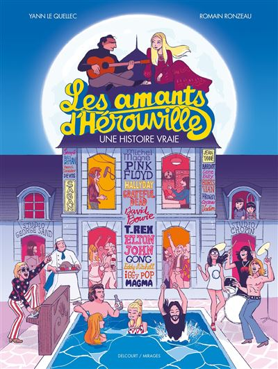
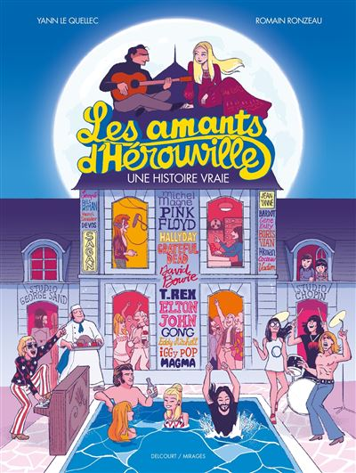
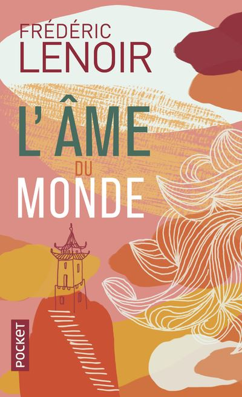
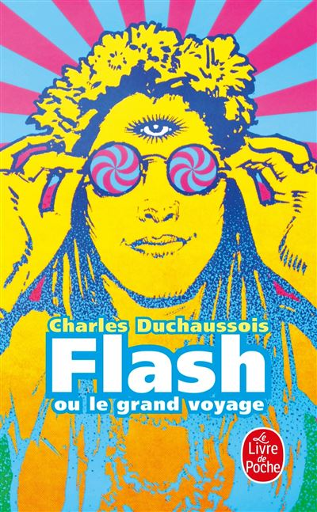

«SURFACE»
«Un excellent polar , efficace et sensible. Ce que j'aime chez Olivier Norek, c'est sa capacité à nous faire rentrer de plein fouet dans son récit dés les premières lignes. Et dans SURFACE, il est loin de me faire mentir… Noémie, capitaine de police se fait tirer en plein visage lors d'une intervention qui tourne mal.» Paul
 

«Grâce à ce roman graphique, j'ai pu découvrir la vie et la biographie de Michel Magne, compositeur, interprète et musicien français. L'histoire parle avant tout du studio d'enregistrement, un lieu mythique qui a attiré les groupes de rock les plus prestigieux. Il y a beaucoup de documentations, un véritable reportage.» Aline

«Sept sages avec des croyances différentes tentent de révéler les secrets de la sagesse à la prochaine génération. Un texte riche, qui pousse le lecteur à se poser des questions sur la place de la spiritualité dans nos sociétés. Un bel hymne à la tolérance et à l’ouverture d’esprit.» Galatée

«Le récit bouleversant d’un jeune homme épris d’aventure, qui court sans cesse après l’ivresse de la vie. Et puis il se perd dans l’enfer de la drogue. Duchaussois se livre, se met à poils, ne cache rien de ce voyage à la fois merveilleux et tragique, beau et laid et repoussant.» Erwan

«La guerre est de retour avec ce treizième opus de Jujutsu Kaisen. Les démons ont mis Shibuya à feu et à sang, et ont scellé le corps de Satoru. Les exorcistes essaieront de retourner cette situation dramatique mais attention… La mort attend.» Chloé